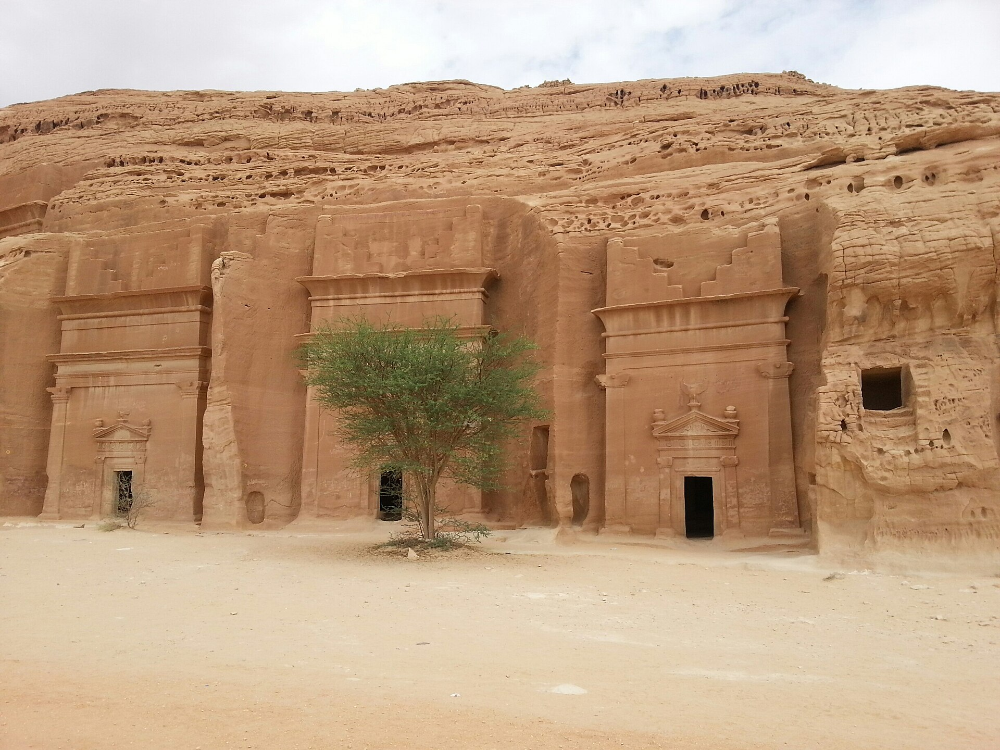
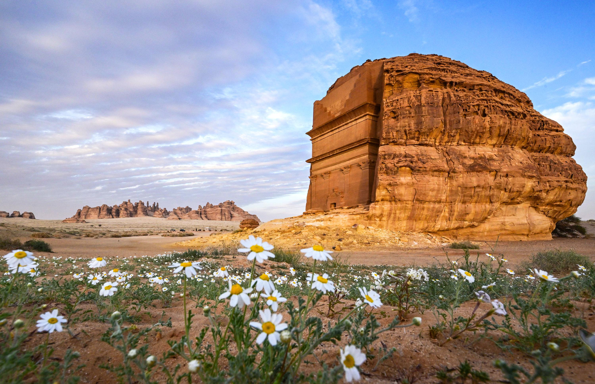

تاريخ
الحِجر
مدينة نبطية تضم أكثر من 110 مقابر منحوتة في الصخر.

سبعة معالم بين التاريخ والطبيعة. اختر مكانًا من الخريطة أو من القائمة لتقرأ عنه، واستمع لوصفه، وأضفه إلى رحلتك.

مدينة نبطية تضم أكثر من 110 مقابر منحوتة في الصخر.
7 أماكن
لا يوجد مكان بهذا الاسم. جرّب كلمة أخرى أو اختر «الكل».
الأسعار تقريبية ومأخوذة من موقع Experience AlUla، وقد تتغير حسب الموسم.